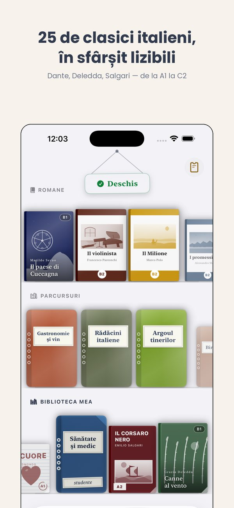
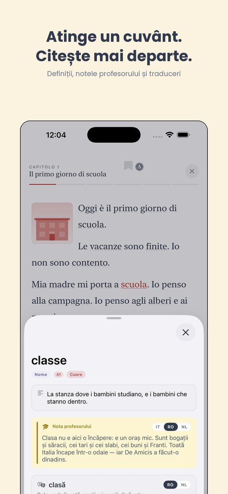
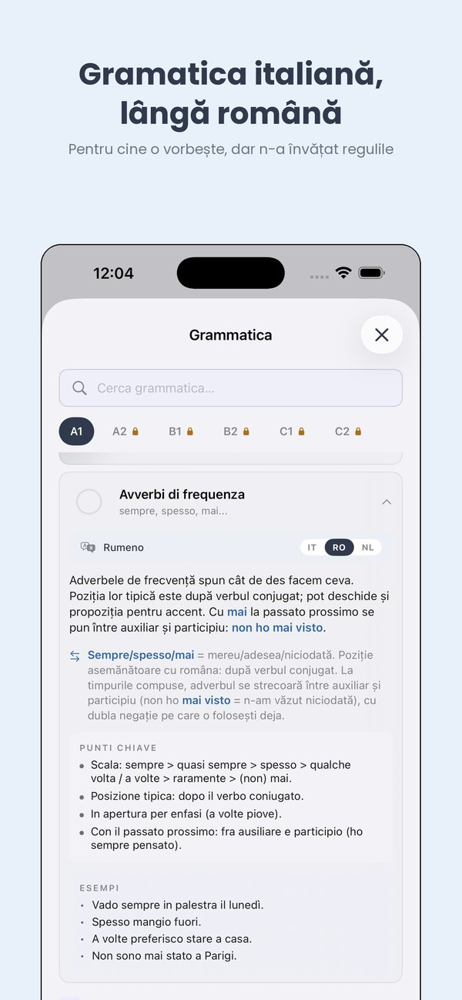
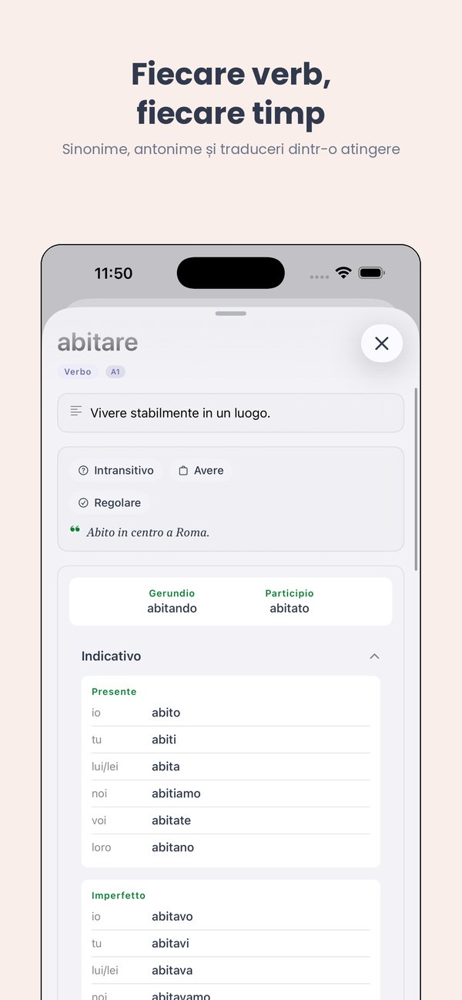
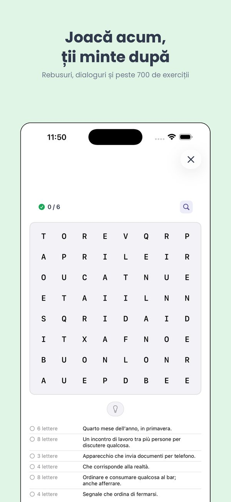

Te iubesc, te învăț italiana.
Testul de italiană pentru cetățenie, explicat.
Dacă ceri cetățenia italiană, trebuie să demonstrezi italiană la nivelul CECR A2. Iată cum e testul și cum să-l pregătești serios.
Ce e exact testul
Din 2018, cei care cer cetățenia italiană (prin rezidență sau căsătorie) trebuie să demonstreze italiană la nivelul CECR A2. Poți face asta cu un certificat de la unul dintre cei patru furnizori oficiali:
- CILS A2 (Università per Stranieri di Siena) — cel mai comun.
- CELI A2 (Università per Stranieri di Perugia).
- PLIDA A2 (Società Dante Alighieri).
- Roma Tre A2.
Toți patru sunt legal echivalenți. Sesiuni de mai multe ori pe an, certificat fără dată de expirare.
Ce înseamnă A2 în practică
A2 nu e fluență. E aproximativ "a supraviețui vieții zilnice în Italia fără engleză". Ar trebui să poți:
- Să te prezinți, să vorbești despre familie și muncă.
- Să povestești ziua ta, casa, cartierul.
- Să citești indicatoare, anunțuri, formulare și articole scurte.
- Să completezi formular cu date personale.
- Să scrii un mesaj scurt (10–15 rânduri) despre un subiect familiar.
- Să înțelegi o conversație lentă și clară pe subiecte cotidiene.
Structura CILS A2
CILS A2 are patru secțiuni:
- Ascolto (ascultare) — 2 audio-uri, 30 min.
- Comprensione della lettura (lectură) — 2 texte scurte, 30 min.
- Analisi delle strutture di comunicazione (gramatică) — completează spațiile, 30 min.
- Produzione scritta (scris) — 2 texte scurte (30–50 cuvinte), 30 min.
- Produzione orale (oral) — interviu scurt, ~5 min.
Trebuie să treci fiecare secțiune pentru a trece pe total.
Cum să te pregătești
Majoritatea au nevoie de 3 până la 6 luni de practică constantă pentru a merge de la zero la A2. Ce funcționează:
- Sesiuni scurte zilnice — 20–40 min pe zi bat o sesiune lungă pe săptămână.
- Toate cele patru abilități — citit, ascultat, scris, vorbit. Mulți neglijează scrisul și vorbitul, care sunt jumătate din examen.
- Vocabular pe teme — familie, muncă, casă, sănătate, cumpărături, călătorii. Apar peste tot.
- Ascultă italiană reală — radio, podcasturi, YouTube. Coffee Break Italian merge bine.
- Simulează examenul — site-ul CILS are teste anterioare. Fă cel puțin trei simulări.
Ti are un parcurs A2 dedicat
Fiecare etapă A2 din Ti e mapată la vocabularul și gramatica CILS/CELI. Gratis la început.
Încearcă Ti pe iOS →Logistică
- Cost: €80–130 după furnizor și centru.
- Unde: centre oficiale în fiecare oraș italian mare și consulatele din străinătate.
- Înscriere: direct pe site-ul furnizorului (cils.unistrasi.it, cvcl.it, ladante.it, uniroma3.it).
- Rezultat: în 8–10 săptămâni. Certificat de trimis la Prefettura pentru dosarul de cetățenie.
Întrebări comune
Am nevoie de test dacă sunt căsătorit(ă) cu un italian?
Da. A2 se aplică atât cetățeniei prin rezidență cât și prin căsătorie.
Ce se întâmplă dacă pic o secțiune?
Refaci tot testul. De aceea contează toate cele patru abilități.
Un certificat de italiană din altă țară e valid?
Da, dacă e de la unul dintre cei patru furnizori oficiali (CILS, CELI, PLIDA, Roma Tre).
Pregătește A2 cu Ti
Parcurs A2 structurat, exerciții stil examen, dicționar în română.
See Ti in action
The CEFR path, exercises, edicola and graded Italian classics — from A1 to C2, in 14 languages.






Mai multe de la Thuis Italiaans
Cărți gradate pe niveluri · Lecții de italiană online · Peste 700 de exerciții gratuite